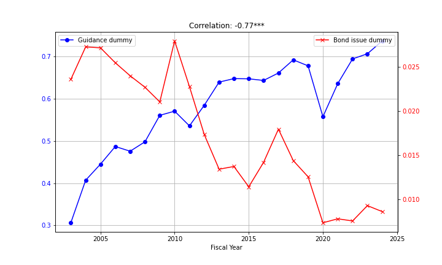

Research#
Working Papers#
- "Signalling with words or with debt? The effect of voluntary disclosure on external public financing choices," Job Market Paper.
Draft available upon requestSummary
This paper examines how managers’ voluntary disclosure choices shape subsequent capital structure decisions between bond financing and equity financing when firms need external funds. I posit that managers of good-type firms have two signaling options: (1) issue bonds or (2) disclose and issue equity. Because disclosure resolves information asymmetry, it makes equity issuance cheaper. Therefore, disclosure complements equity and substitutes for bonds. The optimal choice depends on the relative costs of disclosure and debt. Using data on U.S. public firms from 2002 to 2024, I show that firms with higher future profitability exhibit a positive relation between disclosure and equity issuance and a negative relation between disclosure and bond issuance. Cross-sectional tests based on disclosure costs and default risk, as well as two regulatory shocks—the 2005 Securities Offering Reform and the 2017 Tax Cuts and Jobs Act—support the prediction that firms substitute between bond financing and the disclosure-equity bundle. These findings reconcile empirical inconsistencies in the pecking-order theory by showing that good-type firms prefer equity when it is bundled with voluntary disclosure.
- "I need a network: determinants and real effects of bond roadshows," with Mingxuan Ma and Sike Chen.
SSRN linkSummary
Equity roadshows are a well-studied phenomenon, and the literature has found that their primary purpose is to reduce information asymmetry and underpricing. However, little is known about the determinants and real effects of bond roadshows. This paper examines why firms decide to conduct a roadshow when issuing bonds and their real effects on the cost of bonds - a literature gap possibly due to a lack of readily available data, which we had to manually collect. We conduct surveys with underwriters and issuers to gain their insights on the role of bond roadshows and obtain two conflicting answers: according to underwriters, bond roadshows have an informational role, while according to issuers, they have a marketing role. We test these opposing views in the German bond market (2014–2023), finding evidence in support of the marketing role. We show that bond roadshows aim to raise investors' attention and increase their demand in the primary market, possibly to establish a network of institutional investors. The different role that bond roadshows have compared to equity roadshows underscores the importance of closing the literature gap and studying their real effects. We test and find that bond roadshows reduce the cost of bonds for firms, reducing bonds' final spread and substituting for the need for underpricing to ensure successful issuance. These findings offer novel insights into the role of the investors' networks in bond markets, highlighting how roadshows influence capital-raising outcomes.
- "Mandatory Sustainability Reporting and Project Selection," with Hui Chen.
SSRN linkSummary
We examine the implications of a regulatory shift in sustainability reporting from voluntary to mandated regime in a market with responsible investors. A myopic manager must choose between a brown project and a green project, both of which generate an uncertain financial return and an environmental externality. Since the information quality on externality is not perfect, the manager always under-invests in the green project in both reporting regimes, but more severely so in the voluntary regime due to the optional value voluntary disclosure provides in concealing bad information. Adopting mandatory disclosure thus improves firms' sustainability performance and investor welfare. However, considering the costs associated with mandatory disclosure, it is more efficient only when the quality of a firm's sustainability information is sufficiently high. To ensure an efficient shift to sustainability disclosure mandates, firms should first improve the quality of their sustainability information systems.
Work in Progress#
- "Environmental feedback effect," with Daniela Zipperer.
- "When horizons converge: investor selection, firm output and aggregate welfare," with Igli Bajo.